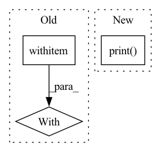

Pattern ID :32362
Before Change
internal_network_id=pub_net,
spec="1")))
).nat_gateway
with cli_logger .group("Creating NAT EIP",
_numbered=("()", current_step, total_steps)):
current_step += 1
// Create EIP
_bw_name = HWC_WORKSPACE_EIP_BANDWIDTH_NAME.format(workspace_name)
_eip_name = HWC_WORKSPACE_EIP_NAME.format(workspace_name)After Change
internal_network_id=pub_net,
spec="1")))
).nat_gateway
cli_logger.print( "Successfully created NAT gateway: {}.", nat_name)
return nat_gateway
def _check_and_create_eip(config, workspace_name):In pattern: SUPERPATTERN
Frequency: 3
Non-data size: 3
Instances Fragment ID: 94508278
Project Name: oap-project/cloudtik
Commit Name: 51af6454f902712603554374df4e60d405ad34e3
Time: 2023-03-01
Author: haifeng.chen@intel.com
File Name: python/cloudtik/providers/_private/huaweicloud/config.py
M Class Name: AnonimousClass
N Class Name: AnonimousClass
M Method Name: _check_and_create_nat_gateway(4)
N Method Name: _check_and_create_nat_gateway(4)
M Parent Class:
N Parent Class:
M File Name: python/cloudtik/providers/_private/huaweicloud/config.py
N File Name: python/cloudtik/providers/_private/huaweicloud/config.py
M Start Line: 457
M End Line: 508
N Start Line: 497
N End Line: 510
Before Change
header = [colored(v, attrs=["bold"]) for v in ("Pod", "Time", "Exception")]
with ImportExtensions (required=False):
from prettytable import PrettyTable, ALL
table = PrettyTable(field_names=header, align="l", hrules=ALL)
add_row = table.add_rowAfter Change
from rich.console import Console
console = Console()
console.print( table)
def _safe_callback(func: Callable, continue_on_error: bool, logger) -> Callable:
@wraps(func) Fragment ID: 94508282
Project Name: jina-ai/jina
Commit Name: 29cb11626dea0b458ff0377ad079b1340f467209
Time: 2021-11-15
Author: artex.xh@gmail.com
File Name: jina/clients/helper.py
M Class Name: AnonimousClass
N Class Name: AnonimousClass
M Method Name: pprint_routes(2)
N Method Name: pprint_routes(2)
M Parent Class:
N Parent Class:
M File Name: jina/clients/helper.py
N File Name: jina/clients/helper.py
M Start Line: 24
M End Line: 53
N Start Line: 25
N End Line: 45
Before Change
for i in range(0, availability_zone_num):
cidr_block = cidr_list[i]
zone_id = availability_zones_id[i]
with cli_logger .group(
"Creating vswitch", _numbered=("()", i + 1, availability_zone_num)):
try:
cli_logger.print("Creating instance vswitch for VPC: {} with CIDR: {}...".format(vpc_id, cidr_block))
vswitch_name = ALIYUN_WORKSPACE_INSTANCE_VSWITCH_NAME.format(workspace_name)
vswitch_id = vpc_cli.create_vswitch(vpc_id, zone_id, cidr_block, vswitch_name)After Change
raise e
vswitches.append(vswitch_id)
cli_logger.print( "Successfully created {} VSwitches for VPC: {} ...".format(
availability_zone_num, vpc_id))
return vswitches
def _delete_instance_vswitches(workspace_name, vpc_id, vpc_cli): Fragment ID: 94508281
Project Name: oap-project/cloudtik
Commit Name: b5d136a9705600e3c14893b27630d0b1f112b5f3
Time: 2023-02-28
Author: haifeng.chen@intel.com
File Name: python/cloudtik/providers/_private/aliyun/config.py
M Class Name: AnonimousClass
N Class Name: AnonimousClass
M Method Name: _create_and_configure_vswitches(2)
N Method Name: _create_and_configure_vswitches(2)
M Parent Class:
N Parent Class:
M File Name: python/cloudtik/providers/_private/aliyun/config.py
N File Name: python/cloudtik/providers/_private/aliyun/config.py
M Start Line: 1132
M End Line: 1151
N Start Line: 1124
N End Line: 1155